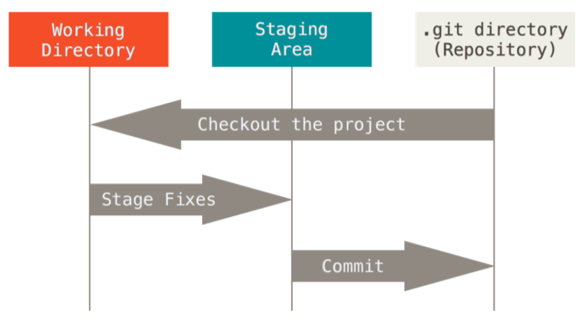

0. 前言
git在团队协作中有重要作用，是有必要进行系统学习的一门工具。本篇是笔者学习git操作的备忘笔记，主要在linux上进行。
1. git历史
很多人都知道，Linus在1991年创建了开源的Linux，从此，Linux系统不断发展，已经成为最大的服务器系统软件了。
Linus虽然创建了Linux，但Linux的壮大是靠全世界热心的志愿者参与的，这么多人在世界各地为Linux编写代码，那Linux的代码是如何管理的呢？
事实是，在2002年以前，世界各地的志愿者把源代码文件通过diff的方式发给Linus，然后由Linus本人通过手工方式合并代码！
你也许会想，为什么Linus不把Linux代码放到版本控制系统里呢？不是有CVS、SVN这些免费的版本控制系统吗？因为Linus坚定地反对CVS和SVN，这些集中式的版本控制系统不但速度慢，而且必须联网才能使用。有一些商用的版本控制系统，虽然比CVS、SVN好用，但那是付费的，和Linux的开源精神不符。
不过，到了2002年，Linux系统已经发展了十年了，代码库之大让Linus很难继续通过手工方式管理了，社区的弟兄们也对这种方式表达了强烈不满，于是Linus选择了一个商业的版本控制系统BitKeeper，BitKeeper的东家BitMover公司出于人道主义精神，授权Linux社区免费使用这个版本控制系统。
安定团结的大好局面在2005年就被打破了，原因是Linux社区牛人聚集，不免沾染了一些梁山好汉的江湖习气。开发Samba的Andrew试图破解BitKeeper的协议（这么干的其实也不只他一个），被BitMover公司发现了（监控工作做得不错！），于是BitMover公司怒了，要收回Linux社区的免费使用权。
Linus可以向BitMover公司道个歉，保证以后严格管教弟兄们，嗯，这是不可能的。实际情况是这样的：
Linus花了两周时间自己用C写了一个分布式版本控制系统，这就是Git！一个月之内，Linux系统的源码已经由Git管理了！牛是怎么定义的呢？大家可以体会一下。
Git迅速成为最流行的分布式版本控制系统，尤其是2008年，GitHub网站上线了，它为开源项目免费提供Git存储，无数开源项目开始迁移至GitHub，包括jQuery，PHP，Ruby等等。
历史就是这么偶然，如果不是当年BitMover公司威胁Linux社区，可能现在我们就没有免费而超级好用的Git了。
2. git三大区


- 工作区(The working tree)：即电脑中git仓库所在的目录，进行工作和修改的目录。
- 暂存区(The staging area)：暂时存放你的修改的区域。 通过
git add命令将工作区改动的内容(包括修改的文件、新增的文件)添加到暂存区。 暂存区是你下次要提交的内容，”that stores information about what will go into your next commit”。 - 版本库(The Git directory)：是存放git仓库中各历史版本的区域，在仓库所在根目录的.git/目录下。 当你执行commit提交时，git会将暂存区的内容复制到版本库中，并设为最新版本。 当执行clone从远程克隆仓库当本地时，会将那个远程仓库的版本库也克隆下来。 在版本库中，有一个HEAD指针，它指向当前分支(通常是master)的当前版本。
3. git配置
git config user.name "yourname" 配置当前项目用户名字
git config user.email youremail 配置当前项目用户邮箱
git config --global user.name "yourname" 配置全局用户名字
git config --global user.email youremail 配置全局用户邮箱
--global 对当前用户，--system 对所有用户
git config --list 查看已有的配置信息
vim ~/.gitconfig 编辑当前用户的git配置文件，vim /etc/gitconfig 所有用户的git配置文件
vim .gitignore 仓库根目录下的.gitignore文件中配置了git操作时的忽略文件
4. git基础操作
4.1. 创建本地仓库
git init 在当前文件夹创建一个可git管理的本地仓库
4.2. 将工作区保存到暂存区
git add xxx add命令并非添加一个文件。而是，将修改或新增的文件从工作区添加到当前本地仓库的暂存区中，表明此修改或新增的文件在下次commit提交的内容之中了。常用git add来添加新增的文件。
git add * 将所有修改与新增的文件添加到暂存区。当你在仓库根目录下设置了.gitignore文件并配置了忽略文件时，此命令会报错，如下：
1 | $ git add * |
如果你强行使用git add -f *命令，则会添加ignore.md文件。但这样.gitignore文件就没有意义了，所以不建议使用git add *和git add -f *。
4.3. 将暂存区提交到版本库
git commit 将暂存区提交到本地仓库的版本库。若存在没有被git add添加到暂存区的文件，则不会被提交。
-m "xxxx" 后面跟着的为本次提交的说明。git commit时必须使用此选项。
-a 官方解释:”Tell the command to automatically stage files that have been modified and deleted, but new files you have not told Git about are not affected.” 意思大概是：-a将工作区中所有进行修改或删除后的文件都提交到本地仓库，但新增的文件并不提交。
常用commit -m"aaa" -a直接将更改从工作区提交到版本库，而不用经过暂存区。
4.4. 撤销(重置)
git reset --hard 等价于 git reset --hard HEAD 即撤销工作区和暂存区中的所有修改，重置为版本库中HEAD指向的当前版本(未被修改的部分)。
而上一个版本就是 HEAD^，上上一个版本就是 HEAD^^，当然往上100个版本写100个^比较容易数不过来，所以写成 HEAD~100。
或者，你也可以 git reset --hard <commit_id> 直接回溯到某个版本，<commit_id> 指版本号(通过 git log 查看)，版本号没必要写全，前几位就可以了，Git会自动去找。
git reset <file>或git reset HEAD <file> 撤销git add到暂存区的修改。
git checkout -- <file> 撤销工作区的修改。
4.5. 删除
git rm <file> 如果你已经把某个新增文件提交到版本库了，然后你想删除这个文件，那就用该命令将文件删去，再提交。使用该命令后，git的状态是：
1 | $ git rm test.md |
说明 git rm 会直接更新到暂存区。
删除文件其实还可以，直接删除，如下：
1 | $ ls |
此时没有直接更新到暂存区，可以通过 git add/rm <file> 来更新。同时，可以通过 git checkout -- <file> 来恢复这个文件。
4.6. 查看状态
git status 显示工作区与暂存区的状态，比如哪些文件被修改了、哪些文件没保存到暂存区、哪些文件没提交等等。若存在没被add的新文件（即未被git跟踪的文件），则会提示Untracked。
1 | $ git status |
git status -s 更简单地显示状态变化，如：显示 M controllers/article.go
显示内容的每一行开头，M表示被修改、A表示被增加、？？表示未受控制
1 | $ git status -s |
4.7. 查看不同
git diff readme.txt 查看readme.txt这个文件中具体什么内容被修改了。其中：
git diff查看工作区和暂存区的区别git diff --cached查看暂存区和版本库之间的区别git diff HEAD查看工作区和版本库之间的区别
4.8. 查看提交日志
git log 查看仓库版本库中(本地仓库和远程仓库的版本库是一样的)从最近到最远的版本信息。换而言之，即每次提交的信息。如下是一次的信息：
1 | commit ee26988de11d36133d180663ddf7b24c4a6233e5 |
其中commit一项对应的，是git提交的版本号
git log --graph 显示版本以及分支图，可以说很生动形象了
git reflog 查看历史git命令
4.9. 隐藏工作
当工作区的修改未提交，而我们又想将其隐藏起来时，就需要用到git的stash功能。
git stash 隐藏工作区和暂存区的修改，储存到一个地方。
1 | $ git status |
git stash list 查看储存起来的工作现场。
1 | $ git stash list |
恢复工作现场有两种方法：
一是用git stash apply恢复，但是恢复后，stash内容并不删除，你需要用git stash drop来删除；
另一种方式是用git stash pop，恢复的同时把stash内容也删了。
5. git分支
5.1. 分支的作用：
分支在实际中有什么用呢？假设你准备开发一个新功能，但是需要两周才能完成，第一周你写了50%的代码，如果立刻提交，由于代码还没写完，不完整的代码库会导致别人不能干活了。如果等代码全部写完再一次提交，又存在丢失每天进度的巨大风险。
现在有了分支，就不用怕了。你创建了一个属于你自己的分支，别人看不到，还继续在原来的分支上正常工作，而你在自己的分支上干活，想提交就提交，直到开发完毕后，再一次性合并到原来的分支上，这样，既安全，又不影响别人工作。
总而言之，就是你可以在另外的git分支上干自己的事，而不影响主分支。做完还可以更新到主分支上。
注：git中主分支只有一条，叫 master。一条分支就是一条时间线，每个时间节点代表着每个版本。master是主分支的名字，同时也是指向主分支最新节点的指针，而HEAD一开始指向的就是 master 指针。
5.2. 创建、切换分支
git branch dev 创建dev分支。dev分支会继承当前分支的所有内容。
git checkout dev 切换到dev分支上。
git checkout -b dev 创建dev分支，然后切换到dev分支上。git checkout命令加上-b参数表示创建并切换分支，相当于以下两条命令：
1 | $ git branch dev |
5.3. 查看分支
git branch 查看分支，* 后面的是当前所处分支。
1 | $ git branch |
git branch -a 查看远程和本地所有的分支信息。
git log --graph --pretty=oneline --abbrev-commit 该命令常用于生动形象地显示简略的分支图。显示如下：
1 | $ git log --graph --pretty=oneline --abbrev-commit |
5.4. 合并分支
在dev分支上添加一些内容，然后提交到该分支上，如下：
1 | $ git add branch.md |
回到主分支上，意料之中，并没有出现刚刚修改的内容(新增了branch.md文件)。
1 | $ git checkout dev |
此时，需要将dev分支上合并到master分支上，就能将修改从dev分支更新到master分支上了。
git merge dev 将dev分支合并到master分支。结果如下：
1 | $ git merge dev |
5.5. 合并分支(分支管理篇)
使用 git merge dev 将dev分支合并到master分支时，会将dev中的提交都变为master中的提交。即将两个分支融合在一起，dev中的提交将不在显示。这种合并方式称为：Fast-forward。
但在实际使用中，我们希望保留dev的提交信息，这样能清晰地了解项目每一步的进行。
$ git merge --no-ff -m "xxx" dev 该命令的作用是不采用Fast-forward模式，保留dev分支中每次提交的信息。合并到master分支时，建立一个新的提交，即将dev中的新内容提交到master，而不是粗暴地融合。因此，该命令相当于一个提交，需要附加提交信息-m "xxx"。该命令是项目中的合并常用命令。
--no-ff 与 Fast forward 区别：
未合并时：
1 | A---B---C dev |
git merge dev 合并：
1 | D-A---B---C master |
git merge --no-ff -m "xxx" dev 合并：
1 | A---B---C dev |
5.6. 删除分支
git branch -d dev 删除dev分支
如果分支未合并，则需要强制删除 git branch -D dev
5.7. 解决分支合并冲突
在dev分支上修改branch.md文件并提交。然后，切换到master分支上修改branch.md文件同样位置，但修改内容不同，接着在master上也进行提交。
此时，在master分支上合并dev分支。显然，两个分支上都对同一文件同一位置做了不同修改，这样的合并必然会产生冲突的。合并结果如下：
1 | $ git merge dev |
查看branch.md文件，文件中内容如下：
1 | <<<<<<< HEAD |
<<<<<<< HEAD 与 ======= 之间的是master分支中的内容。
======= 与 >>>>>>> dev 之间是dev分支中的内容。
对于两部分冲突内容，我们需要 手动解决冲突 。选择需要的留下，而将剩下的删除即可。此处，我们选择master中的内容。解决后文件内容如下：
1 | in master branch: |
此时再查看git状态：
1 | $ git status |
按照git的建议，再 git commit -a 提交即可。
注：
1）虽然在master分支中合并了冲突，但是，在dev分支中的内容并没有被修改。不过，合并之后，dev分支已经不重要了。
2）在冲突未解决时，很多git操作都不能使用，比如：撤销。
5.8. 分支管理策略
在实际开发中，我们应该按照几个基本原则进行分支管理：
首先，master分支应该是非常稳定的，也就是仅用来发布新版本，平时不能在上面干活；
那在哪干活呢？dev分支。也就是说，dev分支是不稳定的，到某个时候，比如1.0版本发布时，再把dev分支合并到master上，在master分支发布1.0版本；
你和你的小伙伴们每个人都在dev分支上干活，每个人都有自己的分支，时不时地往dev分支上合并就可以了。
软件开发中，bug就像家常便饭一样。有了bug就需要修复，在Git中，由于分支是如此的强大，所以，每个bug都可以通过一个新的临时分支来修复，修复后，合并分支，然后将临时分支删除。
而合并时，注意要采用--no-ff模式。
6. git远程仓库
6.1. 克隆到本地
git clone https://github.com/xxx/xxx 将github上xxx远程仓库的代码克隆到本地，形成本地仓库。
假如，远程有两个分支master和dev，本地只有一个master分支，克隆或者拉取后并不会在本地创建dev分支。
我们需要用git checkout -b dev origin/dev命令，将远程dev分支创建到本地。
1 | $ git clone https://github.com/99MyCql/TestOfGit.git |
6.2. 查看远程仓库信息
git remote 查看远程仓库信息。
git remote -v 查看详细信息。
1 | $ git remote |
-v 显示了抓取和推送的地址，如果不可推送则没有第二个地址。
git branch -a 查看远程和本地所有的分支信息。
1 | $ git branch -a |
6.3. 添加远程仓库
git remote add <name> <url>，添加一个远程仓库，shortname为自定义的远程主机名，url为远程仓库的url
6.4. 删除远程仓库
git remote remove <name>
6.5. 本地与远程分支追踪关系
在某些场合，Git会自动在本地分支与远程分支之间，建立一种追踪关系（tracking）。比如，在git clone的时候，所有本地分支默认与远程主机的同名分支，建立追踪关系，也就是说，本地的master分支自动”追踪”origin/master分支。Git也允许手动建立追踪关系。
$ git branch --set-upstream-to origin/dev dev 该命令指定dev分支追踪origin/dev分支，即将本地dev分支与远程dev分支建立追踪关系。
当没有建立追踪关系时，如果在dev分支进行远程操作又没有指定远程分支时，则会出错：
1 | $ git branch |
因此，得先建立本地分支与远程分支的追踪关系：
1 | $ git branch --set-upstream-to origin/dev dev |
6.6. 拉取
$ git pull <远程主机名> <远程分支名>:<本地分支名> 取回远程主机某个分支的更新，再与本地的指定分支合并。
如：$ git pull origin next:master 取回origin主机的next分支，与本地的master分支合并
$ git pull origin next 如果远程分支是与当前分支合并，则冒号后面的部分可以省略。
$ git pull origin 本地的当前分支自动与对应的origin主机”追踪分支”进行合并。
$ git pull 该命令表示，当前分支自动与唯一追踪分支进行合并。
如果远程主机删除了某个分支，默认情况下，git pull 不会在拉取远程分支的时候，删除对应的本地分支。这是为了防止，由于其他人操作了远程主机，导致git pull不知不觉删除了本地分支。
但是，你可以改变这个行为，加上参数 -p 就会在本地删除远程已经删除的分支。$ git pull -p
6.7. 推送
$ git push <远程主机名> <本地分支名>:<远程分支名> 注意，分支推送顺序的写法是<来源地>:<目的地>，所以git pull是<远程分支>:<本地分支>，而git push是<本地分支>:<远程分支>。
$ git push origin master 该命令表示，将本地的master分支推送到origin主机的master分支。如果后者不存在，则会被新建。
$ git push origin :master 如果省略本地分支名，则表示删除指定的远程分支，因为这等同于推送一个空的本地分支到远程分支。
等同于:$ git push origin --delete master 删除origin主机的master分支。
$ git push origin 将当前分支推送到origin主机的对应存在追踪关系的分支。
如果当前分支只有一个追踪分支，那么主机名都可以省略$ git push
6.6. 解决冲突
当多人协作时，经常会出现冲突。
比如，A和B同时拉取了远程最新版到本地。A修改了项目的origin.md文件，同时提交并推送到了远程。B也修改了该文件，但当B要推送时，便出现冲突报错了：
1 | $ git push |
显然，远程版本库(A推送后更新了远程版本库)和本地版本库不相同，必然会出现冲突。
此时，我们需按照提示，先拉取最新的内容。
1 | $ git pull |
然后，跟解决合并分支冲突一样，进行手动解决。再将解决后内容提交并推送即可。
1 | $ vim origin.md |